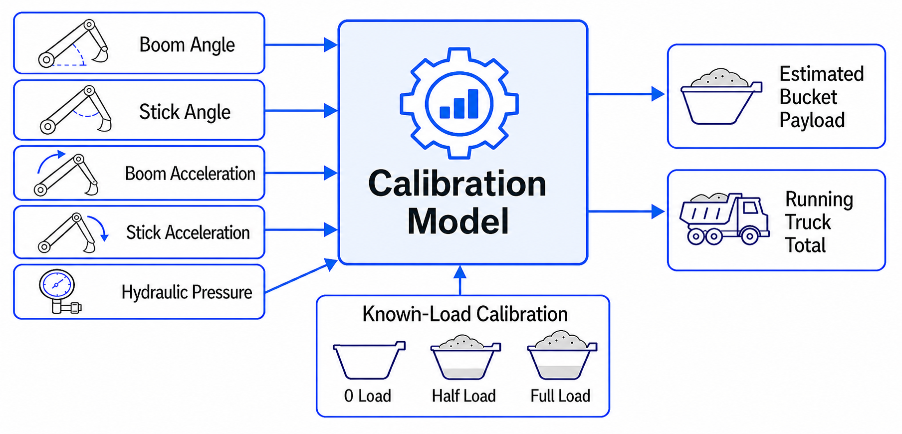
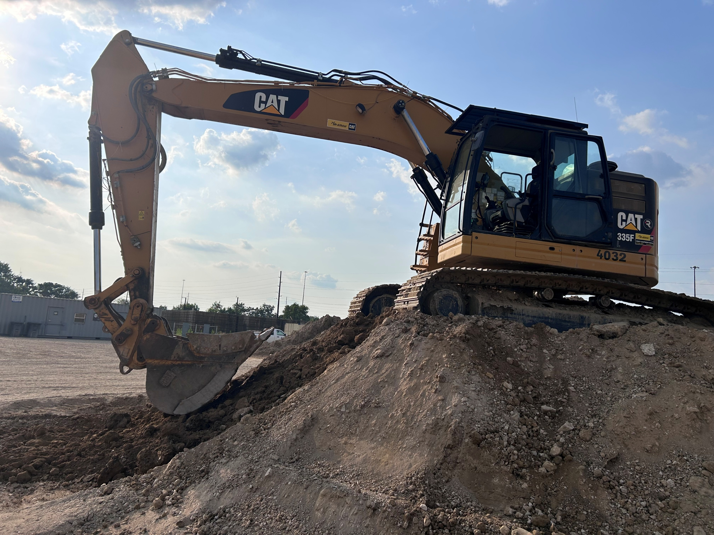
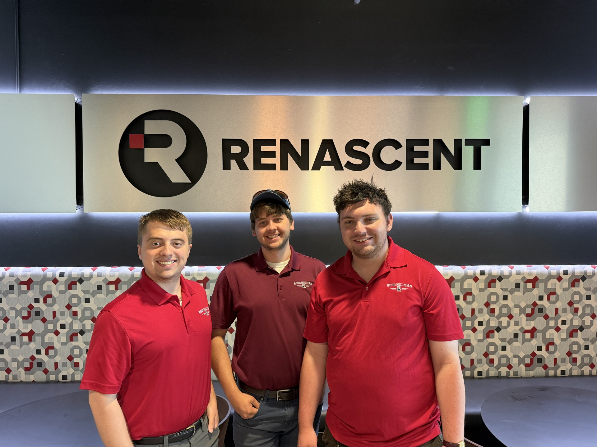

Sensing & estimation
Excavator payload estimation
From a senior design prototype to a field-tested installation.
- Timeline
- Sep 2025 — Aug 2026
- Context
- Senior design + industry R&D
- Tools & methods
Capstone team: Jacob Cockerill, Michael Wilson, Connor Luce, Prithvi Vijaykrishnan, Toby Zhao
Industry R&D team: Jacob Cockerill, Michael Wilson, Connor Luce
Overview
Developed for Renascent, Inc., this system gives excavator operators bucket-payload estimates and running truck-load totals to help reduce under- and over-loading. Two hydraulic pressure transducers and two dynamic inclinometers feed a Raspberry Pi application with an in-cab touchscreen. The work began as a team senior design project and continued through an R&D contractor role.
The senior design prototype
Designed and built a prototype costing approximately $2,500 per excavator, compared with $15,000 for the closest similar aftermarket solution cited in the project. I developed a Python calibration process and estimation model for a controlled lift, using hydraulic pressure, boom and stick positions, and engine speed without direct geometric measurements.
- Field-tested across five payloads and six engine speeds.
- Achieved 2.59% mean absolute relative error and 64.9 lb mean absolute error in prototype testing.
Extending the system in industry
During my R&D contractor role, I extended the estimation model to support variable lift trajectories, pauses, and restarts. The revised formulation treated payload estimation as an inverse surrogate-model problem, including a load-dependent Kronecker-product motion feature derived from boom and stick accelerations.
- Integrated motion compensation and standardized the installation kit, with complete kits installed on CAT 335F and CAT 374F excavators.
- Redesigned the operator interface to automate tracking and provide machine profiles, load history, protected settings, and USB export.
From sensor signals to payload
Known-load calibration fits pressure-difference surfaces across boom and stick positions. A load-dependent motion term accounts for acceleration during the lift. The model then inverts the predicted pressure-to-load relationship for each retained sample and takes the median estimate before applying bucket tare and operator display adjustments. This estimates payload directly from measured pressure differences rather than requiring cylinder-force calculations from measured piston areas.
Field validation
The later R&D system reported a 0.065-ton mean absolute error across 205 retained bucket lifts on a CAT 335F. The tests covered six payload cases from 0.830 to 1.870 tons using a 14° measurement window. Across six truck loads compared with scale weights, mean absolute error was 0.35 ton and the largest absolute difference was 1.1 tons. These results apply to the tested datasets; they are separate from the senior design prototype campaign and do not establish the same accuracy on both installed machines.
Kit cost and repeat installation
The final bill of materials totaled $3,028.80 for the first kit, including supplier package and minimum-order purchases, and $2,903.32 in materials consumed per repeat kit. These figures cover materials before shipping and tax, not labor-inclusive installation costs. The difference reflects unused package quantities carried forward to later kits.
Project details


